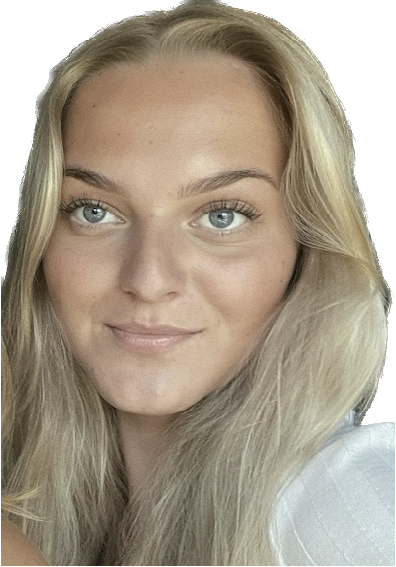

OM MIG
Julie Lander Henriksen
22 år
Smørum
KEA - MULTIMEDIEDESIGN 23/25
Jeg hedder Julie og 22 år gammel
Ligenu studurer jeg på på KEA Multimediedesign på 1. semester.
Jeg har altid været meget kreativ. Min fritid bruger jeg blandt andet på at lave plakater ud af gamle magasiner og blade.
Jeg valgte at søge ind på Multimediedesign, da jeg netop gerne ville bruge min flair for at gøre ting visuelle lækre. Og det syntes jeg helt klart er en egenskab man kan bruge på MMD.
CV
Webdesign
UX
HTML
CSS
JavaScript
ILLUSTRATOR
XD
PREMIERE PRO

PHOTOSHOP
